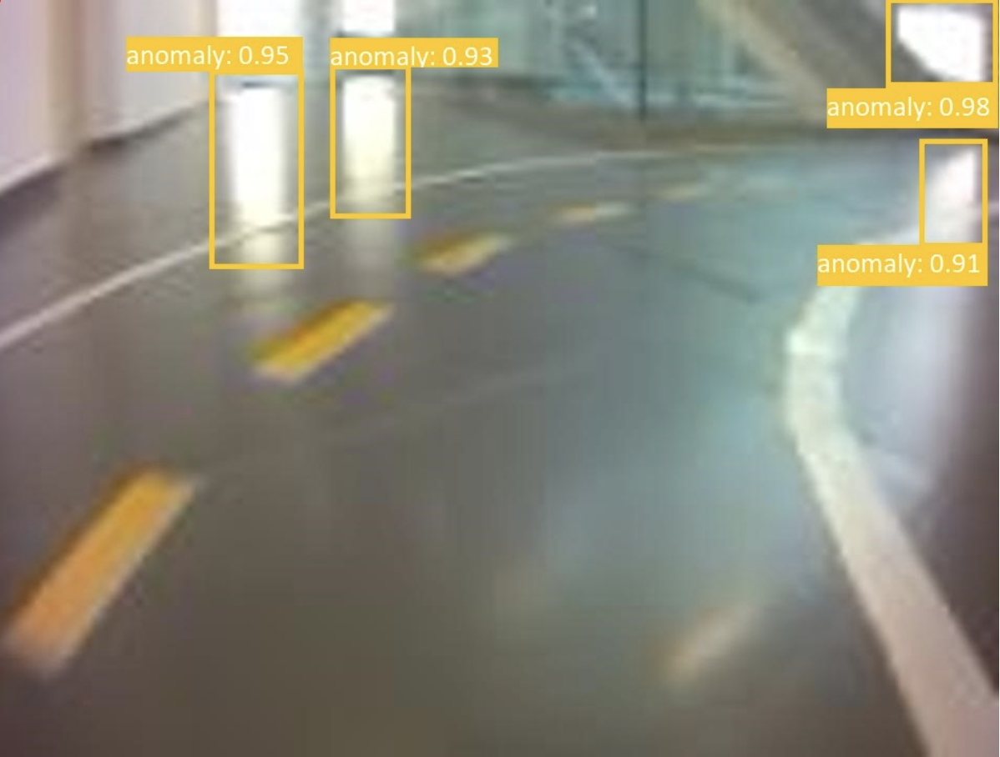

Our sponsors:

 Anomaly detection is a rather important topic for self-driving. Every piece of their presence can occur various issues in image content such as failed detection of relevant objects and traffic signs, which can affect the self-driving skills of our vehicles. Therefore, our main task is that we have to identify, detect and restore as many anomalous parts in images as possible. In our research we define anomalies for relevant situations, and we try to describe their structure. After that, we train different detectors based on deep learning methods, and we measure their precision to investigate the relationship between neural networks and the strength of anomaly. Our final goal is to develop robust neural network architectures, which can handle the presence of anomalous image parts reliably at the most situation.